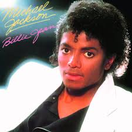
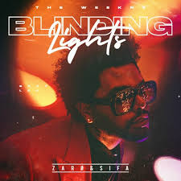

SPobreFy
🔥 -- Top 3 Musicas Semanais -- 🔥
Top 1 🥇
Billie Jean (1983) - Michael Jackson

Um dos maiores sucessos de Michael Jackson, a música marcou gerações com seu ritmo icônico e sua história envolvente sobre fama e consequências.
Top 2 🥈
Blinding Lights (2020) - The Weeknd

O enorme sucesso de The Weeknd conquistou o mundo com sua vibe retrô inspirada nos anos 80 e se tornou uma das músicas mais ouvidas da década.
Top 3 🥉
Shape of You (2017) - Ed Sheeran

Um dos hits mais populares de Ed Sheeran, a música ficou conhecida pela batida contagiante e pela letra romântica que dominou as paradas musicais.